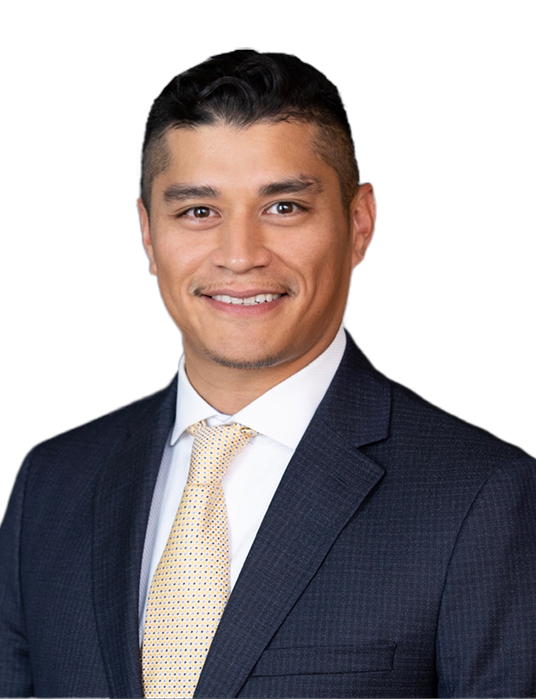

Results-driven and entrepreneurial-minded business leader with over a decade of experience across operations, finance, and strategic management. Recognized for founding and scaling companies in manufacturing and SaaS, as well as for advancing quickly into mid-level management roles in established organizations. Combines a people-first leadership style with a data-informed, analytical approach to solving complex business challenges. Proven ability to lead cross-functional teams, optimize operations, and drive sustainable growth through lean project execution and strategic market expansion. Actively seeking management opportunities where innovation, strategic thinking, and operational excellence are valued.
My leadership style blends analytical decision-making with human-centered collaboration. I help organizations scale sustainably, optimize for performance, and unlock new opportunities for growth.
📍 Oakland, California